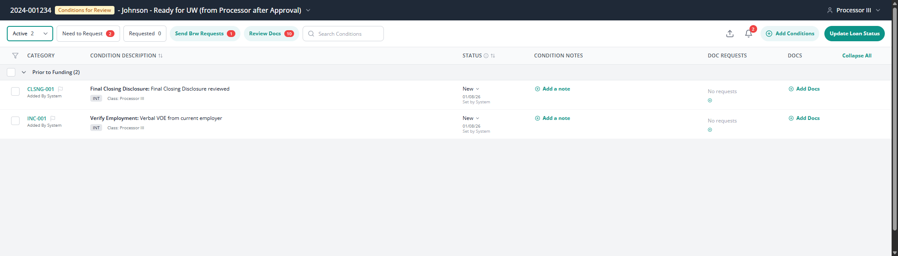

Table of Contents - All 35 Tickets
TIER 1: Platform Foundation (1 ticket)
TIER 2: Role Scaffolding (3 tickets)
TIER 3: Processor Features (18 tickets)
- CP-101: Add Document Request with Rich Text
- CP-102: Edit Condition - Full CRUD
- CP-103: Add Conditions from Template Library
- CP-104: Filter by Status (Processor View)
- CP-105: Search Conditions (Real-time)
- CP-106: Bulk Selection & Actions
- CP-107: Collapse/Expand Stage Groups
- CP-108: Add/Edit Condition Notes (Inline)
- CP-109: Set Flag on Condition (Personal)
- CP-110: Exception Request Management
- CP-111: Condition Dates (Expiration & Follow-Up)
- CP-112: Status History Timeline
- CP-113: Update Loan Status with Submission Notes
- CP-114: Add Documents to Condition (Dual Source)
- CP-115: View Outstanding Document Requests
- CP-116: Create Custom Condition Template
- CP-117: Save/Manage "My Lists"
- CP-118: Real-time Count Badges Update
TIER 3: Underwriter Features (4 tickets)
TIER 3: Borrower Features (4 tickets)
🎯 POC Overview & Testing Scenarios
Scenario Selector (Loan Selection Window)
Important: The "Select Loan" window in the POC is actually a scenario selector that allows you to test different workflow scenarios with pre-staged data. This enables you to quickly see what an underwriter or processor experiences at different stages of the loan conditions workflow.
📸 Screenshot Reference:
Screenshot 06: Loan/Scenario Selector with pre-configured test data
Available Test Scenarios:
- Processor Workflow - Loan with conditions at various processor stages (Need to Request, Requested, Review Docs)
- Underwriter Workflow - Loan with conditions ready for underwriter review and approval
- Mixed Status Scenarios - Loans with conditions at multiple stages simultaneously
- Complete Workflow - Loan showing full lifecycle from New → Cleared
- Exception Scenarios - Loans with exception requests and edge cases
How to Use the Scenario Selector:
- Click the "Select Loan" dropdown in the POC header
- Choose a scenario that matches the workflow you want to test
- The grid will load with pre-staged conditions matching that scenario
- Switch roles (Processor/Underwriter) to see role-specific views of the same data
- Test all features and interactions with realistic, pre-configured data
💡 Implementation Note: This scenario selector mechanism is a POC-only feature for testing. In production, loans will be loaded dynamically based on user role and actual loan data from the Byte API. However, the concept of "test scenarios" could be valuable for QA/staging environments to enable comprehensive workflow testing.
Role-Based Views
The POC demonstrates role-based access control by showing different UI elements and filter options based on the selected role:
- Processor View: 5 filter pills (Active, Need to Request, Requested, Send Brw Requests, Review Docs) - Screenshot 07, 08
- Underwriter View: 2 filter pills (Active, Review Docs) - Screenshot 19
- Role Switcher: Dropdown to toggle between roles and see different perspectives - Screenshot 07
TIER 1: Platform Foundation
CP-001: Conditions Grid Platform (Read-Only)
Screenshot 01: Main Grid View
Overview
The foundational grid component that displays all conditions for a loan, grouped by stage (SUSP, PTD, PTF, PTP, POST, TRAIL). This is a read-only view that establishes the core UI framework, data models, and API contracts for the entire application.
Components
- Grid component with virtual scrolling for performance
- Stage grouping headers with expand/collapse functionality
- Column headers: Checkbox, Category, Condition Description, Status, Notes, Doc Requests, Docs
- Bulk selection checkboxes on each row
- Filter pills container (placeholder for role-specific filters)
- Search box container
- Action buttons panel (placeholder)
Fields & Validation
| Field | Type | Required | Validation |
|---|---|---|---|
| id | string | Yes | Format: CATEGORY-NUMBER (e.g., "CLSNG-001") |
| category | enum | Yes | One of 20+ categories (APP, DISC, CRED, INC, ASSET, etc.) |
| number | string | Yes | 3-digit number, system-generated |
| name | string | Yes | Max 200 characters |
| description | string | Yes | Max 1000 characters |
| status | enum | Yes | One of 7 statuses: New, Need Brw Request, Requested, Processor to Review, Ready for UW, Cleared, Not Cleared |
| stage | enum | Yes | One of 6 stages: SUSP, PTD, PTF, PTP, POST, TRAIL |
| class | enum | Yes | "UW" or "Processor III" |
| type | enum | Yes | "INT" (Internal) or "BRW" (Borrower) |
API Endpoints
Acceptance Criteria
- Grid displays all conditions grouped by stage
- Read-only view (no mutations possible)
- API integration complete and functional
- Responsive layout works on desktop (1920px to 1280px)
- Loads within 2 seconds for 100+ conditions
- Virtual scrolling implemented for performance
- Stage groups show accurate condition counts
- Conditions display correct status badges with color coding
- Checkbox selection state tracked correctly
- All 7 columns render properly with correct data
TIER 2: Role Scaffolding
CP-100: Processor Role Shell
Screenshot 01: Main Grid View (Processor View)
Screenshot 07: Role Switcher

Overview
Creates the Processor role view with specific filters and permission checks. This shell establishes the foundation for all processor-specific features (CP-101 through CP-118).
Components
- Processor-specific filter pills container (5 filters)
- Action buttons panel with placeholder functionality
- Role-based permission checks
- Route: /processor/conditions
- Role switcher dropdown in header
Fields & Validation
| Field | Type | Required | Validation |
|---|---|---|---|
| userRole | enum | Yes | "Processor III" (for this view) |
| filterPills | array | Yes | Exactly 5 pills: Active, Need to Request, Requested, Send Brw Requests, Review Docs |
API Endpoints
Acceptance Criteria
- Processor view shows only conditions where class="Processor III"
- 5 filter pills visible: Active, Need to Request, Requested, Send Brw Requests, Review Docs
- Each filter pill displays accurate count badge
- Action panel renders but buttons are placeholders (no functionality yet)
- Permission check prevents underwriter-only actions
- Role switcher allows changing between Processor and Underwriter views
- Grid filters correctly based on processor role
- Route /processor/conditions is accessible
CP-200: Underwriter Role Shell
Screenshot 19: Underwriter View (2 filters vs 5)

Overview
Creates the Underwriter role view with simplified filters focused on approval/rejection decisions. This shell establishes the foundation for all underwriter-specific features (CP-201 through CP-204).
Components
- Underwriter-specific filter pills container (2 filters only)
- Decision action panel with placeholder functionality
- Simplified UI focused on approval/rejection
- Route: /underwriter/conditions
- Role-based permission checks
API Endpoints
Acceptance Criteria
- Underwriter view shows only conditions where class="UW"
- 2 filter pills visible: Active, Review Docs
- Simplified UI compared to Processor view
- Decision panel placeholder renders
- Permission check prevents processor-only actions
- Route /underwriter/conditions is accessible
- Grid filters correctly based on underwriter role
- Count badges update correctly for underwriter filters
CP-300: Borrower Role Shell
Overview
Creates the Borrower portal view with simplified, borrower-friendly language and mobile-responsive design. This shell establishes the foundation for all borrower-specific features (CP-301 through CP-304).
Components
- Borrower-facing portal view
- Document upload area placeholder
- Status timeline view
- Route: /borrower/conditions
- Mobile-responsive layout
- Simplified language (no internal jargon)
API Endpoints
Acceptance Criteria
- Borrower sees only conditions marked type="BRW"
- Simplified language used (no acronyms or internal jargon)
- Upload placeholder visible in UI
- Mobile-responsive (works on 320px to 768px viewports)
- Route /borrower/conditions is accessible
- Status timeline placeholder renders
- Borrower-friendly labels and descriptions
- No internal workflow details exposed to borrower
TIER 3: Processor Features (CP-101 to CP-118)
CP-101: Add Document Request with Rich Text
Screenshot 03: Add Document Request
Screenshot 04: Document Types Dropdown

Overview
Allows processors to create document requests for specific conditions. Includes a rich text editor for custom descriptions, a dropdown of 16 predefined document types, and borrower selection.
Components
- "Add request" button on each condition row
- Modal: Add Document Request
- Document Type dropdown (16 predefined types)
- Request For selector (borrower names)
- Rich text editor with formatting toolbar
- Character counter (0/1000)
Fields & Validation
| Field | Type | Required | Validation |
|---|---|---|---|
| documentType | enum | Yes | One of 16 types: Appraisal, Asset Statements, Bank Statements, Employment Verification, Flood Insurance Binder, Gift Letter, Government ID, Hazard Insurance Binder, Homeowners Insurance, Mortgage Insurance, Pay Stubs, Purchase Agreement, Tax Returns, Title Insurance, W-2 Forms, Miscellaneous |
| requestFor | array | Yes | At least one borrower ID selected |
| descriptionForBorrower | string (HTML) | No | Max 1000 characters, supports Bold, Italic, Underline, Link |
API Endpoints
Acceptance Criteria
- Modal opens when "Add request" clicked
- Dropdown shows all 16 document types
- Dropdown is searchable (filters as user types)
- Rich text editor supports Bold, Italic, Underline, Link formatting
- Character limit enforced at 1000 characters
- Character counter updates in real-time
- Request For field pre-populated with borrower names from loan
- "Add" button disabled until Document Type is selected
- Request created and appears in Outstanding Document Requests section
- Condition status automatically updates to "Requested" when first doc request is created
- Borrower receives email notification with request details
CP-102: Edit Condition - Full CRUD
Screenshot 02: Edit Condition Modal
Screenshot 13: Edit Condition Expanded View

Overview
Comprehensive modal for editing all condition properties including name, description, status, stage, class, type, and managing associated accordion sections (Set Flag, Outstanding Document Requests, Exception Request, Dates, Status History, Condition Notes).
Components
- Click condition ID to open Edit Condition modal
- Form fields: Name, Description, Category (disabled), Number (disabled), Status, Stage, Class, Type
- Accordion sections: Set Flag, Outstanding Document Requests, Exception Request, Dates, Status History, Condition Notes
- Save/Cancel buttons
Fields & Validation
| Field | Type | Required | Validation |
|---|---|---|---|
| name | string | Yes | Max 200 characters |
| description | string | Yes | Max 1000 characters |
| category | enum | Yes | Read-only, system-generated |
| number | string | Yes | Read-only, system-generated |
| status | enum | Yes | One of 7 statuses |
| stage | enum | Yes | One of 6 stages: SUSP, PTD, PTF, PTP, POST, TRAIL |
| class | enum | Yes | "UW" or "Processor III" |
| type | enum | Yes | "INT" or "BRW" |
API Endpoints
Acceptance Criteria
- All fields pre-populated from current condition data
- Category and Number fields are disabled (read-only)
- Status change records timestamp in statusHistory
- Stage change moves condition to new stage group in grid
- All accordion sections functional and expandable
- Validation prevents empty required fields
- Dates section shows "—" when dates are empty
- Status History section displays all reached statuses with timestamps
- Condition Notes section allows adding new notes
- Cancel button closes modal without saving
- Update button saves changes and refreshes grid
CP-103: Add Conditions from Template Library
Screenshot 05: Add Conditions Modal
Screenshot 17: Add Conditions with My Lists

Overview
Comprehensive 3-panel modal for adding multiple conditions to a loan from a template library. Includes 20+ category filters, search functionality, custom condition creation, and "My Lists" for saved condition sets.
Components
- "Add Conditions" button in header
- Left panel: My Lists & Categories (20+ category buttons)
- Middle panel: Available Conditions with search box
- Right panel: Current Conditions (selected items)
- "Custom" button to create new template
- "Add" and "Remove" buttons for moving conditions between panels
API Endpoints
Acceptance Criteria
- Modal displays three panels: My Lists & Categories, Available Conditions, Current Conditions
- Available Conditions panel loads and displays 150+ standard templates
- Category filter works correctly (clicking category filters templates)
- Search filters by name and description in real-time
- Bulk add creates all conditions in single transaction
- Current Conditions panel shows selected items with number, description, request for
- "My Lists" section shows user's saved condition sets
- Clicking a saved list loads those conditions into Current Conditions panel
- "Custom" button opens custom condition creator
- Add/Remove buttons work correctly between panels
- Modal "Add" button creates all conditions and refreshes grid
CP-104: Filter by Status (Processor View)
Screenshot 12: Filter Pills Active State

Overview
5 filter pills with dynamic counts for the Processor view. Filters conditions by status categories: Active, Need to Request, Requested, Send Brw Requests, Review Docs.
Components
- 5 filter pills with dynamic counts
- Visual highlighting on selected filter
- Count badges calculated server-side
Fields & Validation
| Filter | Status Mapping | Description |
|---|---|---|
| Active | New, Processor to Review | Conditions currently being worked on |
| Need to Request | Need Brw Request | Conditions requiring document requests |
| Requested | Requested | Document requests sent to borrower |
| Send Brw Requests | (Custom logic) | Ready to send to borrower |
| Review Docs | (Has documents uploaded) | Documents received, awaiting review |
API Endpoints
Acceptance Criteria
- Clicking filter pill filters grid to matching conditions
- Count badges update in real-time
- Active filter visually highlighted
- Clicking same filter again clears filter
- Filter state persists when switching between views
- Counts accurate based on current condition statuses
- Filter works in combination with search
CP-105: Search Conditions (Real-time)
Overview
Real-time search functionality that filters conditions by name, description, ID, or category. Debounced at 300ms to avoid excessive API calls.
Components
- Search textbox in header
- Placeholder: "Search Conditions"
- Debounced search (300ms delay)
- Searches across multiple fields
API Endpoints
Acceptance Criteria
- Search filters grid as user types (after 300ms delay)
- Searches across name, description, ID, category fields
- Clearing search restores full list
- Works in combination with filter pills
- Case-insensitive search
- No flickering or jarring updates
- Search icon visible in textbox
CP-106: Bulk Selection & Actions
Overview
Checkbox-based selection system for individual and bulk condition selection. Includes "Select All" functionality and selection count badge.
Components
- Checkbox on each condition row
- "Select All" checkbox in header
- Selection count badge: "N selected"
- Bulk action buttons (placeholder for future)
Acceptance Criteria
- Clicking checkbox selects/deselects condition
- Select All checks all visible conditions
- Count badge shows accurate selection count
- Selection persists when filtering/searching
- Visual indication of selected state
- Deselecting "Select All" clears all selections
- Selection state tracked in React context
CP-107: Collapse/Expand Stage Groups
Overview
Allows users to collapse and expand stage groups (SUSP, PTD, PTF, PTP, POST, TRAIL) for better navigation. State persists across page reloads using localStorage.
Components
- Expand/collapse arrow on each stage header
- "Collapse All" button in header
- localStorage to persist collapsed state
- Smooth animation on expand/collapse
Acceptance Criteria
- Clicking stage header toggles expanded/collapsed
- "Collapse All" collapses all stages
- State persists across page reloads
- Smooth animation on expand/collapse
- Arrow icon rotates to indicate state
- Collapsed stage still shows count badge
CP-108: Add/Edit Condition Notes (Inline)
Screenshot 11: Inline Note Editor
Screenshot 16: Condition Notes Section

Overview
Inline rich text editor for quickly adding notes to conditions without opening a modal. Supports formatting and appears directly on the condition row.
Components
- "Add a note" button on each condition row
- Inline rich text editor
- Toolbar: Bold, Italic, Underline, Strikethrough, Bullet List, Numbered List, Link
- Save/Cancel buttons
API Endpoints
Acceptance Criteria
- Clicking "Add a note" reveals inline editor
- Editor supports rich text formatting
- Save creates note with timestamp and author
- Note appears in "Condition Notes" section of Edit modal
- Cancel closes editor without saving
- Editor replaces the note button area inline
- Saved note visible immediately on grid
CP-109: Set Flag on Condition (Personal)
Screenshot 14: Set Flag Personal System

Overview
Personal flag system allowing users to mark conditions with colored flags (Red, Blue, Yellow, Green) for prioritization. Flags are user-specific and not visible to others.
Components
- "Set Flag" button in Edit Condition modal
- Expandable section with 5 radio buttons
- Info message: "These flags are your personal flags and will not be visible to others"
- "Apply" button
- Visual flag indicator on grid row
Fields & Validation
| Flag Color | Value | Use Case |
|---|---|---|
| Red | red | Urgent/High Priority |
| Blue | blue | Information/Review |
| Yellow | yellow | Caution/Follow-Up |
| Green | green | Complete/Good to Go |
| No Flag | null | Clear flag |
API Endpoints
Acceptance Criteria
- Flag selection opens in Edit Condition modal
- Selecting flag and clicking Apply saves flag
- Flag appears as colored indicator on grid row
- Flag is user-specific (not visible to other users)
- Clearing flag (No Flag) removes indicator
- Info message clearly states flags are personal
- Flag persists across sessions for that user
CP-110: Exception Request Management
Overview
Allows processors to create exception requests for conditions that cannot be satisfied normally. Includes approval workflow where underwriters approve/deny exception requests.
Components
- "Exception Request" accordion in Edit Condition modal
- Default message: "There currently is not an exception request"
- "Create Exception" button
- Exception form: reason, supporting documentation
- Approval workflow
API Endpoints
Acceptance Criteria
- Processor can create exception request with reason
- Underwriter sees exception in their queue for approval
- Approved exception changes condition status
- Denied exception requires processor action
- Exception history tracked with timestamps
- Supporting documentation can be attached
- Notifications sent to underwriter when exception created
- Notifications sent to processor when exception approved/denied
CP-111: Condition Dates (Expiration & Follow-Up)
Overview
Date picker functionality for setting Expiration Date and Follow Up Date on conditions. Dates display with "—" placeholder when empty and can be highlighted when past due.
Components
- "Dates" accordion in Edit Condition modal
- Expiration Date date picker
- Follow Up Date date picker
- Calendar icon buttons to open pickers
API Endpoints
Acceptance Criteria
- Clicking calendar icon opens date picker
- Selecting date updates field and saves to API
- Dates display in readable format (MM/DD/YYYY)
- Empty dates show "—" placeholder
- Past due dates highlighted in red
- Date picker supports keyboard navigation
- Dates can be cleared back to empty state
CP-112: Status History Timeline
Overview
Read-only timeline displaying all status transitions with exact timestamps. Shows all 7 possible statuses, with reached statuses showing timestamp and unreached statuses showing "—".
Components
- "Condition Status Dates" section in Edit Condition modal
- Always visible, read-only
- Table showing all 7 statuses with timestamps
- Format: "Status Name: MM/DD/YYYY HH:MM AM/PM" or "—"
Fields & Validation
| Status | Display |
|---|---|
| New | Timestamp or "—" |
| Need Brw Request | Timestamp or "—" |
| Requested | Timestamp or "—" |
| Processor to Review | Timestamp or "—" |
| Ready for UW | Timestamp or "—" |
| Cleared | Timestamp or "—" |
| Not Cleared | Timestamp or "—" |
Acceptance Criteria
- Timeline displays all status transitions
- Each reached status shows exact timestamp
- Unreached statuses show "—"
- Read-only (cannot edit historical data)
- Timeline updates automatically when status changes
- Timestamps show full date and time with AM/PM
CP-113: Update Loan Status with Submission Notes
Screenshot 09: Update Loan Status Modal

Overview
Allows processors to add submission notes before updating loan status. Integrates with Byte API to launch external loan status page. Notes are visible to all loan team members.
Components
- "Update Loan Status" button in header
- Modal: "Submission Details"
- Rich text editor with placeholder
- Info message about note visibility
- "Open Byte Loan Status Page" button
API Endpoints
Acceptance Criteria
- Modal opens when "Update Loan Status" clicked
- Rich text editor supports formatting
- Notes saved to loan (not condition-specific)
- Notes visible to all loan team members
- "Open Byte" button disabled until notes saved
- "Open Byte" button launches external Byte system
- Info message clearly states note visibility
CP-114: Add Documents to Condition (Dual Source)
Screenshot 10: Add Docs Dropdown Menu

Overview
Dual-source document addition: browse and link documents from CLEAR Docs system OR upload new files from computer. Supports drag-drop, file validation, and preview.
Components
- "Add Docs" button on each condition row
- Dropdown menu with 2 options
- Option 1: "Browse and add docs from CLEAR Docs"
- Option 2: "Upload from your computer"
- File upload UI: drag-drop, file type validation, preview
- CLEAR Docs browser modal
API Endpoints
Acceptance Criteria
- Dropdown reveals two source options
- CLEAR Docs option opens integration modal
- File upload supports drag-drop and browse
- Files validated for type (PDF, JPG, PNG, DOCX) and size (10MB max)
- Documents linked to condition
- Document count badge updates on grid
- Progress indicator shows during upload
- Success/error messaging displayed
CP-115: View Outstanding Document Requests
Screenshot 15: Outstanding Document Requests Accordion
Overview
Accordion section in Edit Condition modal displaying all document requests linked to the condition. Shows type, date, recipient, and status for each request.
Components
- "Outstanding Document Requests" accordion in Edit Condition modal
- List view: document type, request date, requested from, status
- "Add a Doc Request" button
- Status badges: Pending, Received, Reviewed
Acceptance Criteria
- Accordion shows all doc requests for this condition
- Each request shows type, date, recipient, status
- Clicking "Add a Doc Request" triggers CP-101 modal
- Empty state: "No document requests"
- Status badges color-coded (Pending=yellow, Received=blue, Reviewed=green)
- List updates when new request added
CP-116: Create Custom Condition Template
Screenshot 18: Custom Condition Creator

Overview
Allows users to create custom conditions from scratch when standard templates don't fit. Optionally save as template for future reuse.
Components
- "Custom" button in Add Conditions modal
- Modal: "Add Custom Condition"
- Form fields: Name, Description, Category, Number, Stage, Class, Type, Save as Template
- Additional sections: Set Flag, Document Requests
API Endpoints
Acceptance Criteria
- Clicking "Custom" opens custom condition form
- All 20+ categories available in dropdown
- Condition number auto-generated based on category
- "Save as Template" checkbox persists condition for future use
- Custom condition added to Current Conditions panel
- If saved as template, appears in "My Custom Templates" category
- Form validation prevents submission with empty required fields
CP-117: Save/Manage "My Lists"
Screenshot 17: Add Conditions with My Lists
Overview
Allows users to save frequently used condition combinations as named lists for quick access. Lists are user-specific and persist across sessions.
Components
- "My Lists" section in Add Conditions modal
- Pre-populated example lists: "FHA Loans", "Frequently Used"
- "Add New List" button
- Save list modal: name, description, selected conditions
API Endpoints
Acceptance Criteria
- User can click "Add New List" after selecting conditions
- Save modal captures list name and description
- Saved list appears in "My Lists" section
- Clicking saved list name loads those conditions into Current Conditions panel
- Lists are user-specific (not shared across team)
- Lists persist across sessions
- User can edit or delete saved lists
CP-118: Real-time Count Badges Update
Overview
WebSocket or polling mechanism to update count badges in real-time when conditions change. Keeps filter pill counts, selection counts, and stage group counts accurate without page refresh.
Components
- WebSocket connection or polling mechanism
- Updates filter pill counts
- Updates selection count badge
- Updates stage group counts
API Endpoints
Acceptance Criteria
- Filter pill counts update without page refresh
- Selection count reflects accurate number
- Stage group counts update when conditions move
- Updates visible within 2 seconds of change
- No page flicker or jarring updates
- WebSocket connection handles reconnection gracefully
- Polling fallback if WebSocket unavailable
TIER 3: Underwriter Features (CP-201 to CP-204)
CP-201: Clear Condition (Underwriter)
Overview
Allows underwriters to mark conditions as "Cleared" with optional approval notes. Timestamps and underwriter name recorded in status history.
Components
- "Clear" button/action in underwriter view
- Status change to "Cleared"
- Approval notes field (optional)
- Timestamp and underwriter name recorded
API Endpoints
Acceptance Criteria
- Underwriter can mark condition as "Cleared"
- Approval notes captured (optional field)
- Timestamp and underwriter recorded in status history
- Condition moves out of underwriter queue
- Processor notified of clearance
- Status badge updates to green "Cleared"
- Condition cannot be edited after clearing (requires unclear action)
CP-202: Reject Condition (Underwriter)
Overview
Allows underwriters to reject conditions with required rejection reason. Sends condition back to processor with clear explanation of what needs to be fixed.
Components
- "Reject" or "Not Cleared" action
- Status change to "Not Cleared"
- Rejection reason field (required)
- Sends condition back to processor
API Endpoints
Acceptance Criteria
- Underwriter can mark condition as "Not Cleared"
- Rejection reason required (cannot be empty)
- Condition returns to processor queue
- Processor notified of rejection with reason
- Status history records rejection with reason
- Status badge updates to red "Not Cleared"
- Rejection reason visible to processor in condition notes
CP-203: Request Additional Info (UW to Processor)
Overview
Allows underwriters to send conditions back to processors requesting additional information or clarification without fully rejecting the condition.
Components
- "Request Info" button in underwriter view
- Status change to "Processor to Review"
- Comments field for specifying needed info
- Notification to processor
API Endpoints
Acceptance Criteria
- Underwriter can send condition back for more information
- Status changes to "Processor to Review"
- Comments field captures what additional info is needed
- Processor receives notification with comments
- Processor can see underwriter's request in condition notes
- Condition remains in processor queue until addressed
- Underwriter's comments timestamped and attributed
CP-204: Escalate Condition for Review (Underwriter)
Overview
Allows underwriters to escalate complex or difficult conditions to senior underwriters or managers for review and guidance.
Components
- "Escalate" button for complex conditions
- Escalation reason field
- Escalation notification to senior underwriter/manager
- Condition flagged in system
API Endpoints
Acceptance Criteria
- Underwriter can escalate difficult conditions
- Escalation reason captured and required
- Senior underwriter/manager notified
- Condition appears in escalated conditions queue
- Original underwriter remains assigned
- Escalation history tracked with timestamps
- Visual indicator shows condition is escalated
TIER 3: Borrower Features (CP-301 to CP-304)
CP-301: View Required Documents List (Borrower)
Overview
Borrower-facing portal showing only BRW-type conditions in simplified, borrower-friendly language. Displays document requests with due dates and status indicators.
Components
- Borrower portal view (BRW-type conditions only)
- Simplified language (no internal jargon)
- Document request list with due dates
- Status indicators: Pending, Submitted, Approved
API Endpoints
Acceptance Criteria
- Borrower sees only conditions marked type="BRW"
- Language is borrower-friendly (no acronyms like PTF, UW, etc.)
- Each document request shows: name, description, due date, status
- Overdue requests highlighted in red
- Mobile-responsive (works on phone screens)
- Status badges use clear language (Not Started, In Progress, Complete)
- Clean, simple UI without overwhelming details
CP-302: Upload Documents for Condition (Borrower)
Overview
Allows borrowers to upload documents via drag-drop or file browser. Supports multiple files, shows upload progress, validates file types and sizes, and notifies processor when complete.
Components
- "Upload Document" button for each request
- File upload UI: drag-drop, multiple file support
- File preview before submission
- Progress indicator during upload
- Success/error messaging
Fields & Validation
| Field | Type | Validation |
|---|---|---|
| files | FileList | Max 10MB per file, formats: PDF, JPG, PNG, DOCX |
API Endpoints
Acceptance Criteria
- Borrower can upload files via drag-drop or browse
- Multiple files supported per request
- File size limit enforced (10MB per file)
- Supported formats: PDF, JPG, PNG, DOCX
- Progress bar shows upload status
- Success message confirms upload
- Processor notified of new document
- File preview shown before final submission
- Clear error messages for invalid files
CP-303: Track Condition Status & Timeline (Borrower)
Overview
Visual timeline showing borrowers the progress of their document requests through simplified stages: Requested → Submitted → Under Review → Approved/Rejected.
Components
- Status timeline view: Requested → Submitted → Under Review → Approved/Rejected
- Visual progress indicator
- Timestamp for each stage
- Estimated completion date
API Endpoints
Acceptance Criteria
- Borrower sees visual timeline of condition status
- Current stage highlighted
- Completed stages show checkmark and timestamp
- Pending stages grayed out
- Estimated completion date displayed (if available)
- Simplified stage names (no internal terminology)
- Mobile-friendly timeline design
CP-304: Receive Notifications for Updates (Borrower)
Overview
Multi-channel notification system for borrowers: email (required), SMS (opt-in), and in-app notifications. Notifies borrowers of new requests, document approval/rejection, and status changes.
Components
- Email notifications: new document request, document approved, document rejected
- SMS notifications (opt-in)
- In-app notification bell icon with count badge
- Notification preferences page
API Endpoints
Acceptance Criteria
- Borrower receives email when document requested
- Borrower receives email when document approved/rejected
- SMS opt-in available in preferences
- In-app bell icon shows unread count
- Clicking notification navigates to relevant condition
- Notification preferences saved per borrower
- Email templates are borrower-friendly and clear
- SMS messages are concise and actionable
TIER 3: Cross-Cutting Features (CP-400 to CP-404)
CP-400: Activity History & Audit Log
Overview
Comprehensive audit log tracking all changes to conditions. Shows who made what change, when, and before/after values. Filterable by action type, user, and date range. Exportable to CSV.
Components
- Activity log view showing all actions on condition
- Filterable by action type, user, date range
- Audit trail: who, what, when, from/to values
- Export to CSV
API Endpoints
Acceptance Criteria
- All condition changes logged with timestamp and user
- Log shows before/after values for edited fields
- Filterable by action type and date
- Exportable to CSV
- Log immutable (cannot be edited or deleted)
- Clear action descriptions (not technical codes)
- Pagination for large logs
CP-401: Email & SMS Notifications
Overview
Multi-channel notification system with SMTP email and SMS (Twilio) integration. Sends notifications for key events: document requested, status changed, condition cleared, etc. Users can configure notification preferences.
Components
- Email notification system (SMTP integration)
- SMS notification system (Twilio/similar)
- Notification templates: document requested, status changed, condition cleared
- Notification preferences per user
API Endpoints
Acceptance Criteria
- Processor notified when borrower uploads document
- Underwriter notified when condition ready for review
- Borrower notified when document requested
- Borrower notified when condition cleared
- Users can opt-out of specific notification types
- Notifications sent within 1 minute of trigger event
- Email templates are professional and branded
- SMS messages are concise (160 characters)
CP-402: Export Conditions Report (PDF/Excel)
Overview
Export functionality to generate PDF or Excel reports of conditions. PDF formatted with company branding, Excel contains all grid columns. Report respects current filters (only exports visible conditions).
Components
- "Export" button in header
- Format selector: PDF or Excel
- Report includes: all visible conditions, current filters, metadata
- PDF: formatted report with logo
- Excel: spreadsheet with columns matching grid
API Endpoints
Acceptance Criteria
- Export button generates report based on current view
- PDF formatted with company branding
- Excel contains all columns from grid
- Report respects current filters (only exports visible conditions)
- Download initiates within 3 seconds
- File named appropriately (e.g., "Conditions_2024-001234_2026-01-15.pdf")
- Excel is properly formatted with headers and data types
CP-403: CLEAR Docs System Integration
Overview
API integration with CLEAR Docs document management system. Allows browsing, searching, and linking documents from CLEAR Docs to conditions. Syncs document metadata and handles authentication.
Components
- API integration with CLEAR Docs
- Document browser modal
- Document metadata sync
- Link CLEAR document to condition
API Endpoints
Acceptance Criteria
- User can browse CLEAR Docs from within app
- Selected documents linked to condition
- Document metadata (name, date, type) synced
- Documents accessible via link (opens in CLEAR)
- Integration handles authentication
- Search functionality within CLEAR Docs browser
- Error handling for integration failures
CP-404: Byte API Integration (Loan Data Sync)
Screenshot 09: Update Loan Status Modal (with "Open Byte Loan Status Page" button)
Overview
Bidirectional API integration with Byte loan origination system. Pulls loan data (borrower info, loan amount, property address) and pushes condition status updates. Includes "Open Byte Loan Status Page" button functionality.
Components
- API integration with Byte
- Loan data pull: borrower info, loan amount, property address
- Condition data push: status updates to Byte
- "Open Byte Loan Status Page" button functionality
API Endpoints
Acceptance Criteria
- Loan data automatically synced from Byte
- Condition status changes pushed to Byte
- "Open Byte" button launches external system with loan context
- Sync errors handled gracefully with retry logic
- Integration authenticated via OAuth or API key
- Sync occurs in background without blocking UI
- Sync status indicator visible to users
- Manual sync button available if needed
Document Version: 1.0 - Complete 35 Ticket Breakdown
Last Updated: January 2026
POC Source: https://conditions-portal-pr-ahby.bolt.host/